20.43 QSUM: Indefinite and Definite Summation of
q-Hypergeometric Terms
Authors: Harald Böing and Wolfram Koepf
20.43.1 Introduction
This package is an implementation of the q-analogues of Gosper’s and
Zeilberger’s
algorithm for indefinite, and definite summation of q-hypergeometric terms,
respectively.
An expression ak is called a q-hypergeometric term, if ak∕ak−1 is a rational function
with respect to qk. Most q-terms are based on the q-shifted factorial or qpochhammer.
Other typical q-hypergeometric terms are ratios of products of powers, q-factorials,
q-binomial coefficients, and q-shifted factorials that are integer-linear in their
arguments.
20.43.2 Elementary q-Functions
Our package supports the input of the following elementary q-functions:
- qpochhammer(a,q,infinity)
|
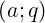 ∞ := ∏
j=0∞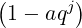
|
- qpochhammer(a,q,k)
 k := k := 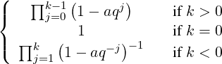
|
- qbrackets(k,q)
- qfactorial(k,q)
- qbinomial(n,k,q)
 q := q := 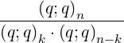
|
Furthermore it is possible to use an abbreviation for the generalized q-hypergeometric
series (basic generalized hypergeometric series, see e. g. [GR90], Chapter 1) which is
defined as:
where 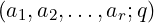
k is a short form to write the product ∏
j=1r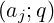
k.
An rϕs series terminates if one of its numerator parameters is of the form q−n with
n ∈ ℕ. The additional factor 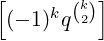
1+s−r (which does not occur in the
corresponding definition of the generalized hypergeometric function) is due to a
confluence process. With this factor one gets the simple formula:
|
limar→∞rϕs 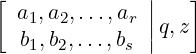 = r−1ϕs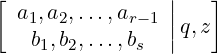 .
|
Another variation is the bilateral basic hypergeometric series (see e. g. [GR90], Chapter
5) that is defined as
|
rψs 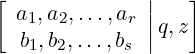 := ∑
k=−∞∞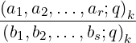 zk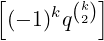 s−r.
|
The summands of those generalized q-hypergeometric series may be entered by
- qphihyperterm(a1,a2,...,a3,b1,b2,...,b3,q,z,k) and
- qpsihyperterm(a1,a2,...,a3,b1,b2,...,b3,q,z,k)
respectively.
20.43.3 q-Gosper Algorithm
The q-Gosper algorithm[Koo93] is a decision procedure, that decides by algebraic
calculations whether or not a given q-hypergeometric term ak has a q-hypergeometric
term antidifference gk, i. e. ak = gk −gk−1 with gk∕gk−1 rational in qk. The ratio gk∕ak
is also rational in qk — an important fact which makes the rational certification (see
§ 20.43.4) of Zeilberger’s algorithm possible. If the procedure is successful it returns gk,
in which case we call ak q-Gosper-summable. Otherwise no q-hypergeometric
antidifference exists. Therefore if the q-Gosper algorithm does not return a
q-hypergeometric antidifference, it has proved that no such solution exists, an
information that may be quite useful and important.
Any antidifference is uniquely determined up to a constant, and is denoted by
Finding gk given ak is called indefinite summation. The antidifference operator Σ is the
inverse of the downward difference operator ∇ak = ak − ak−1. There is an
analogous summation theory corresponding to the upward difference operator
Δak = ak+1 − ak.
In case, an antidifference gk of ak is known, any sum ∑
k=mnak can be easily
calculated by an evaluation of g at the boundary points like in the integration
case:
20.43.4 q-Zeilberger Algorithm
The q-Zeilberger algorithm [Koo93] deals with the definite summation of q-hypergeometric
terms f(n,k) wrt. n and k:
Zeilberger’s idea is to use Gosper’s algorithm to find an inhomogeneous recurrence
equation with polynomial coefficients for f(n,k) of the form
where g(k)∕f(k) is rational in qk and qn. Assuming finite support of f(n,k) wrt. k (i. e.
f(n,k) = 0 for any n and all sufficiently large k) we can sum equation (20.88) over all
k ∈ ℤ. Thus we receive a homogeneous recurrence equation with polynomial coefficients
(called holonomic equation) for s(n):
At this stage the implementation assumes that the summation bounds are infinite and the
input term has finite support wrt. k. If those input requirements are not fulfilled the
resulting recursion is probably not valid. Thus we strongly advise the user to check those
requirements.
Despite this restriction you may still be able to get valuable information by the program:
On request it returns the left hand side of the recurrence equation (20.89) and the
antidifference g(k) of equation (20.88).
Once you have the certificate g(k) it is trivial (at least theoretically) to prove equation
(20.89) as long as the input requirements are fulfilled. Let’s assume somone gives us
equation (20.88). If we divide it by f(n,k) we get a rational identity (in qn and qk) —due
to the fact that g(k)∕f(n,k) is rational in qn and qk. Once we confirmed this identity we
sum equation (20.88) over k ∈ ℤ:
Again we exploit the fact that g(k) is a rational multiple of f(n,k) and thus g(k) has
finite support which makes the telescoping sum on the right hand side vanish. If we
exchange the order of summation we get equation (20.89) which finishes the
proof.
Note that we may relax the requirements for f(n,k): An infinite support is possible as
long as limk→∞g(k) = 0. (This is certainly true if limk→∞p(k)f(k) = 0 for all
polynomials p(k).)
For a quite general class of q-hypergeometric terms (proper q-hypergeometric terms) the
q-Zeilberger algorithm always finds a recurrence equation, not necessarily of
lowest order though. Unlike Zeilberger’s original algorithm its q-analogue more
often fails to determine the recursion of lowest possible order, however (see
[PR95]).
If the resulting recurrence equation is of first order
|
a(n)s(n − 1) + b(n)s(n) = 0,
|
s(n) turns out to be a q-hypergeometric term (as a and b are polynomials in qn), and
a q-hypergeometric solution can be easily established using a suitable initial
value.
If the resulting recurrence equation has order larger than one, this information can be
used for identification purposes: Any other expression satisfying the same recurrence
equation, and the same initial values, represents the same function.
Our implementation is mainly based on [Koo93] and on the hypergeometric analogue
described in [Koe95a]. More examples can be found in [GR90], [Gas95], some of which
are contained in the test file qsum.tst.
20.43.5 REDUCE operator qgosper
The qgosper operator is an implementation of the q-Gosper algorithm.
- qgosper(a,q,k) determines a q-hypergeometric antidifference. (By
default it returns a downward antidifference, which may be changed by
the switch qgosper_down; see also § 20.43.8.) If it does not return a
q-hypergeometric antidifference, then such an antidifference does not exist.
- qgosper(a,q,k,m,n) determines a closed formula for the definite
sum ∑
k=mnak using the q-analogue of Gosper’s algorithm. This is only
successful if q-Gosper’s algorithm applies.
Examples: The following two examples can be found in [GR90] ((II.3) and
(2.3.4)).
1: qgosper(qpochhammer(a,q,k)*q^k/qpochhammer(q,q,k),q,k);
k
(q *a - 1)*qpochhammer(a,q,k)
-------------------------------
(a - 1)*qpochhammer(q,q,k)
2: qgosper(qpochhammer(a,q,k)*qpochhammer(a*q^2,q^2,k)*
qpochhammer(q^(-n),q,k)*q^(n*k)/(qpochhammer(a,q^2,k)*
qpochhammer(a*q^(n+1),q,k)*qpochhammer(q,q,k)),q,k);
k*n k k n
( - q *(q *a - 1)*(q - q )
1 2 2
*qpochhammer(----,q,k)*qpochhammer(a*q ,q ,k)
n
q
2*k n
*qpochhammer(a,q,k))/((q *a - 1)*(q - 1)
n 2
*qpochhammer(q *a*q,q,k)*qpochhammer(a,q ,k)
*qpochhammer(q,q,k))
Here are some other simple examples:
3: qgosper(qpochhammer(q^(-n),q,k)*z^k
/qpochhammer(q,q,k),q,k);
***** No q-hypergeometric antidifference exists.
4: off qgosper_down;
5: qgosper(q^k*qbrackets(k,q),q,k);
k k
- q *(q + 1 - q )*qbrackets(k,q)
-----------------------------------
k
(q - 1)*(q + 1)*(q - 1)
6: on qgosper_down;
7: qgosper(q^k,q,k,0,n);
n
q *q - 1
----------
q - 1
20.43.6 REDUCE operator qsumrecursion
The qsumrecursion operator is an implementation of the q-Zeilberger algorithm. It
tries to determine a homogeneous recurrence equation for summ(n) wrt. n with
polynomial coefficients (in n), where
|
summ(n) := ∑
k=−∞∞f(n,k).
|
If successful the left hand side of the recurrence equation (20.89) is returned.
There are three different ways to pass a summand f(n,k) to qsumrecursion:
- qsumrecursion(f,q,k,n), where f is a q-hypergeometric term wrt.
k and n, k is the summation variable and n the recursion variable, q is a
symbol.
- qsumrecursion(upper,lower,q,z,n) is a shortcut for
qsumrecursion(qphihyperterm(upper,lower,q,z,k),
q,k,n)
- qsumrecursion(f,upper,lower,q,z,n) is a similar shortcut for
qsumrecursion(f*qphihyperterm(upper,lower,q,z,k),
q,k,n),
i. e. upper and lower are lists of upper and lower parameters of the generalized
q-hypergeometric function. The third form is handy if you have any additional
factors.
For all three instances the following variations are allowed:
As a first example we want to consider the q-binomial theorem:
|
∑
k=0∞ 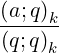 zk = 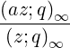 ,
|
provided that |z|,|q| < 1. It is the q-analogue of the binomial theorem in the sense
that
|
limq→1−∑
k=0∞ 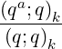 zk = ∑
k=0∞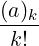 zk = (1 − z)−a.
|
For a := q−n with n ∈ ℕ our implementation gets:
8: qsumrecursion(qpochhammer(q^(-n),q,k)*z^k/
qpochhammer(q,q,k),q,k,n);
n n
- ((q - z)*summ(n - 1) - q *summ(n))
Notice that the input requirements are fulfilled. For n ∈ ℕ the summand is zero for all
k > n as
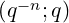
k = 0 and the 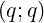
k-term in the denominator makes the summand
vanish for all k < 0.
With the switch qsumrecursion_certificate it is possible to get the
antidifference gk described above. When switched on, qsumrecursion returns a list
with five entries, see § 20.43.8. For the last example we get:
9: on qsumrecursion_certificate;
10: proof:= qsumrecursion(qpochhammer(q^(-n),q,k)*z^k/
qpochhammer(q,q,k),q,k,n);
n n
proof := - ((q - z)*summ(n - 1) - q *summ(n)),
k n
- (q - q )*z
----------------,
n
q - 1
k 1
z *qpochhammer(----,q,k)
n
q
--------------------------,
qpochhammer(q,q,k)
k,
downward_antidifference
11: off qsumrecursion_certificate;
Let’s define the list entries as {rec,cert,f,k,dir}. If you substitute
summ(n + j) by f(n + j,k) in rec then you obtain the left hand side of equation
(20.88), where f is the input summand. The function g(k) := f*cert is the
corresponding antidifference, where dir states which sort of antidifference was
calculated downward_antidifference or upward_antidifference, see also
§ 20.43.8. Those informations enable you to prove the recurrence equation for the sum
or supply you with the necessary informations to determine an inhomogeneous
recurrence equation for a sum with nonnatural bounds.
For our last example we can now calculate both sides of equation (20.88):
12: lhside:= qsimpcomb(sub(summ(n)=part(proof,3),
summ(n-1)=sub(n=n-1,part(proof,3)),part(proof,1)));
k k n n
lhside := (z *(q *(q - z) + q *(z - 1))
1 n
*qpochhammer(----,q,k))/((q - 1)
n
q
*qpochhammer(q,q,k))
13: rhside:= qsimpcomb((part(proof,2)*part(proof,3)-
sub(k=k-1,part(proof,2)*part(proof,3))));
k k n n k
rhside := ( - z *((q - q )*z - q *(q - 1))
1 n
*qpochhammer(----,q,k))/((q - 1)
n
q
*qpochhammer(q,q,k))
14: qsimpcomb((rhside-lhside)/part(proof,3));
0
Thus we have proved the validity of the recurrence equation.
As some other examples we want to consider some generalizations of orthogonal
polynomials from the Askey–Wilson–scheme [KS94]: The q-Laguerre (3.21), q-Charlier
(3.23) and the continuous q-Jacobi (3.10) polynomials.
15: operator qlaguerre,qcharlier;
16: qsumrecursion(qpochhammer(q^(alpha+1),q,n)/
qpochhammer(q,q,n),
{q^(-n)}, {q^(alpha+1)}, q, -x*q^(n+alpha+1),
qlaguerre(n));
n alpha + n n
((q + 1 - q )*q - q *(q *x + q))
*qlaguerre(n - 1) + (
alpha + n
(q - q)*qlaguerre(n - 2)
n
+ (q - 1)*qlaguerre(n))*q
17: qsumrecursion({q^(-n),q^(-x)},{0},q,-q^(n+1)/a,
qcharlier(n));
x n n 2*n
- ((q *((q + 1 - q )*a + q )*q - q )
x
*qcharlier(n - 1) + q *(
n n
(q + a*q)*(q - q)*qcharlier(n - 2)
- qcharlier(n)*a*q))
18: on qsum_nullspace;
19: term:= qpochhammer(q^(alpha+1),q,n)/qpochhammer(q,q,n)*
qphihyperterm({q^(-n),q^(n+alpha+beta+1),
q^(alpha/2+1/4)*exp(I*theta),
q^(alpha/2+1/4)*exp(-I*theta)},
{q^(alpha+1),
-q^((alpha+beta+1)/2),
-q^((alpha+beta+2)/2)},
q,q,k)$
20: qsumrecursion(term,q,k,n,2);
n i*theta alpha beta n
- ((q *e *(q *(q *(q *(q + 1) - q)
alpha + beta + n
n beta + n
*(q + 1 - q - q )) -
(alpha + beta)/2 alpha n
q *(q *(q *(q + 1) - q
beta + n n
+ q *(q + 1 - q ))
2*alpha + beta + 2*n
- (q + q)))
(2*alpha + 1)/4
*(sqrt(q) + q) + q
2*i*theta alpha + beta + 2*n 2
*(e + 1)*(q - q )
alpha + beta + 2*n
*(q - 1))
alpha + beta + 2*n
*(q - q)*summ(n - 1) -
i*theta (alpha + beta + 2*n)/2
e *((q
(alpha + beta + 2*n)/2
*(q + q)
(alpha + beta + 2*n)/2
*(q - q)
*(sqrt(q) + q) + (
(2*alpha + 2*beta + 4*n + 1)/2
q
alpha + beta + 2*n 2
+ q)*(q - q )
alpha + beta + n n
)*(q - 1)*(q - 1)
alpha
*summ(n) + (q *(sqrt(q)*q
alpha + beta + 2*n
+ q ) +
(3*alpha + beta + 2*n)/2
q
*(sqrt(q) + q))
alpha + beta + 2*n
*(q - 1)
alpha + n beta + n
*(q - q)*(q - q)
*summ(n - 2)))
21: off qsum_nullspace;
The setting of qsum_nullspace (see [PR95] and § 20.43.8) results in a faster
calculation of the recurrence equation for this example.
20.43.7 Simplification Operators
An essential step in the algorithms introduced above is to decide whether a term ak is
q-hypergeometric, i. e. if the ratio ak∕ak−1 is rational in qk.
The procedure qsimpcomb provides this facility. It tries to simplify all exponential
expressions in the given term and applies some transformation rules to the known
elementary q-functions as qpochhammer, qbrackets, qbinomial and
qfactorial. Note that the procedure may fail to completely simplify some
expressions. This is due to the fact that the procedure was designed to simplify ratios of
q-hypergeometric terms in the form f(k)∕f(k − 1) and not arbitrary q-hypergeometric
terms.
E. g. an expression like
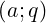
−n ⋅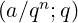
n is not recognized as 1, despite the
transformation formula
|
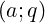 −n = 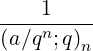 ,
|
which is valid for n ∈ ℕ.
Note that due to necessary simplification of powers, the switch precise is (locally)
turned off in qsimpcomb. This might produce wrong results if the input term contains
e. g. complex variables.
The following synomyms may be used:
- up_qratio(f,k) or qratio(f,k) for
qsimpcomb(sub(k=k+1,f)/f) and
- down_qratio(f,k) for qsimpcomp(f/sub(k=k-1,f)).
20.43.8 Global Variables and Switches
The following switches can be used in connection with the QSUM package:
- qsum_trace, default setting is off. If it is turned on some intermediate
results are printed.
- qgosper_down, default setting is on. It determines whether qgosper
returns a downward or an upward antidifference gk for the input term ak,
i. e. ak = gk − gk−1 or ak = gk+1 − gk respectively.
- qsumrecursion_down, default setting is on. If it is switched on a
downward recurrence equation will be returned by qsumrecursion.
Switching it off leads to an upward recurrence equation.
- qsum_nullspace, default setting is off. The antidifference g(k) is
always a rational multiple (in qk) of the input term f(k). qgosper and
qsumrecursion determine this certificate, which requires solving a set of
linear equations. If the switch qsum_nullspace is turned on a modified
nullspace-algorithm will be used for solving those equations. In general
this method is slower. However if the resulting recurrence equation is
quite complicated it might help to switch on qsum_nullspace. See also
[Knu81] and [PR95].
- qgosper_specialsol, default setting is on. The antidifference g(k)
which is determined by qgosper might not be unique. If this switch is
turned on, just one special solution is returned. If you want to see all
solutions, you should turn the switch off.
- qsumrecursion_exp, default setting is off. This switch determines if the
coefficients of the resulting recurrence equation should be factored. Turning
it off might speed up the calculation (if factoring is complicated). Note
that when turning on qsum_nullspace usually no speedup occurs by
switching qsumrecursion_exp on.
- qsumrecursion_certificate, default off. As Zeilberger’s algorithm
delivers a recurrence equation for a q-hypergeometric term f(n,k), see
equation (20.88), this switch is used to get all necessary informations for
proving this recurrence equation.
If it is set on, instead of simply returning the resulting recurrence equation
(for the sum)—if one exists—calling qsumrecursion returns a list
{rec,cert,f,k,dir} with five items: The first entry contains the
recurrence equation, while the other items enable you to prove the recurrence
a posteriori by rational arithmetic.
If we denote by r the recurrence rec where we substituted the summ-function by
the input term
textttf (with the corresponding shifts in n) then the following equation is
valid:
|
r = cert*f - sub(k=k-1,cert*f)
|
if dir=downward_antidifference or
|
r = sub(k=k+1,cert*f) - cert*f
|
if dir=upward_antidifference.
The global variable qsumrecursion_recrange!* controls for which recursion
orders the procedure qsumrecursion looks. It has to be a list with two entries, the
first one representing the lowest and the second one the highest order of a recursion to
search for. By default it is set to {1,5}.
20.43.9 Messages
The following messages may occur:
- If your call to qgosper or qsumrecursion reveals some incorrect syntax,
e. g. wrong number of arguments or wrong type you may receive the following
messages:
***** Wrong number of arguments.
or
***** Wrong type of arguments.
- If you call qgosper with a summand term that is free of the summation variable you
get
WARNING: Summand is independent of summation variable.
***** No q-hypergeometric antidifference exists.
- If qgosper finds no antidifference it returns:
***** No q-hypergeometric antidifference exists.
- If qsumrecursion finds no recursion in the specified range it returns:
***** Found no recursion. Use higher order.
(If you do not pass a range as an argument to qsumrecursion the default range in
qsumrecursion_recrange!* will be used.)
- If the input term passed to qgosper (qsumrecursion) is not q-hypergeometric
wrt. the summation variable — say k — (and the recursion variable) then you
get
***** Input term is probably not q-hypergeometric.
With all the examples we tested, our procedures decided properly whether the input
term was q-hypergeometric or not. However, we cannot guarantee in general that
qsimpcomb always returns an expression that looks rational in qk if it actually
is.
- If the global variable qsumrecursion_recrange!* was assigned an invalid
value:
Global variable qsumrecursion_recrange!* must be a list
of two positive integers: {lo,hi} with lo<=hi.
***** Invalid value of qsumrecursion_recrange!*